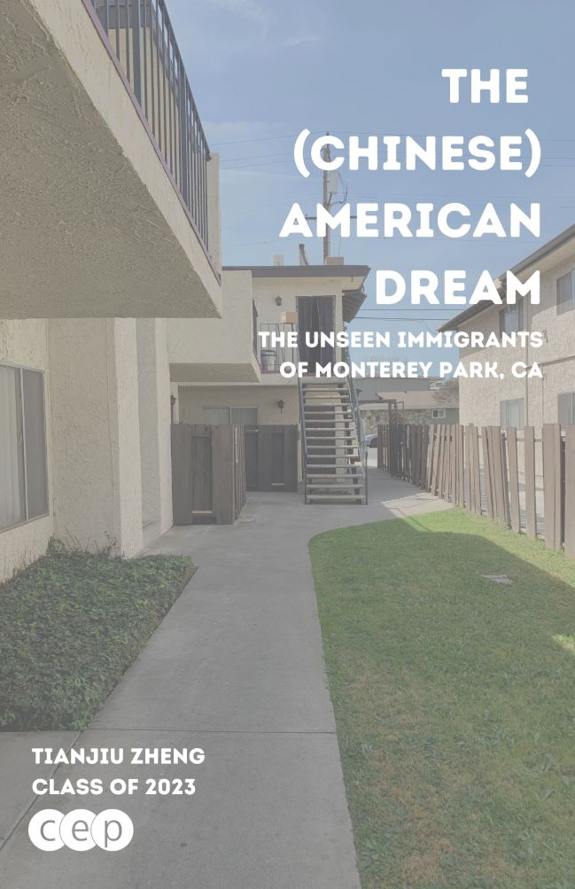

Capstone
This project examined the lives of new Chinese immigrants to the city of Monterey Park, a unique, majority-Asian ethnoburb in the San Gabriel Valley region of Los Angeles, California. The city has become the landing spot for countless new Chinese immigrants to the United States, many who came to the country in search of economic opportunities and a better life abroad: a metaphorical Ellis Island of the 21st century. Given this context, I had the following question in mind: What are the challenges that members of this community face in finding work and housing given the barriers in language, legal status, and other factors? I sought to investigate change in the community over time by contrasting various experiences at different points in time. As guided by an extensive literature review of the past of the city, its growth, and its housing situation, I traveled to Monterey Park and interviewed residents on their personal experiences. Alongside a reflection of myself and my mother's time in the community in the same position a decade ago, this project connected these various experiences into a narrative story of the lives of Chinese immigrants in this city, the why and how of their journey, and what they hope to achieve in the future. The results of this project should be able to bring more awareness to the challenges of the residents of the city, as well as a starting point for further research into this community.
